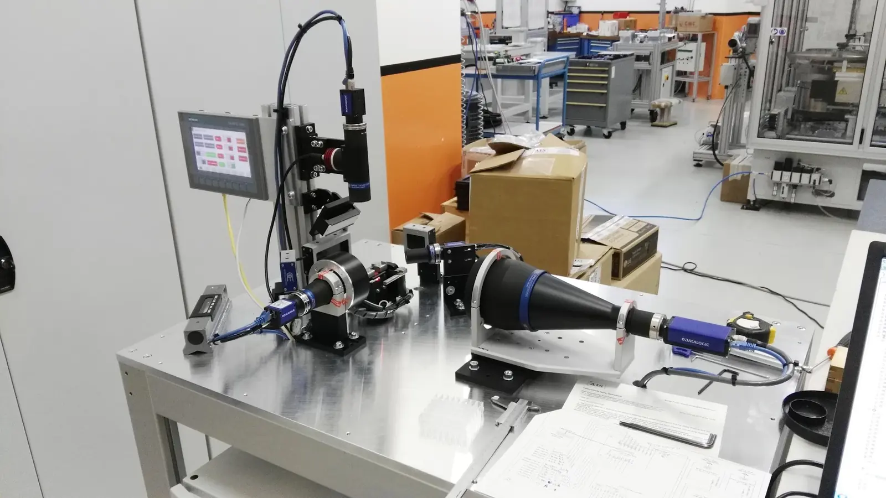
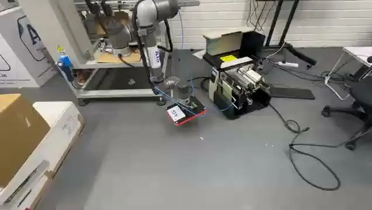
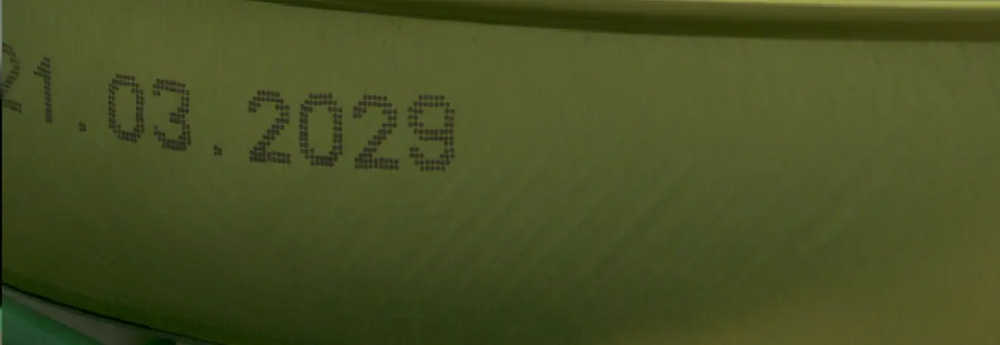
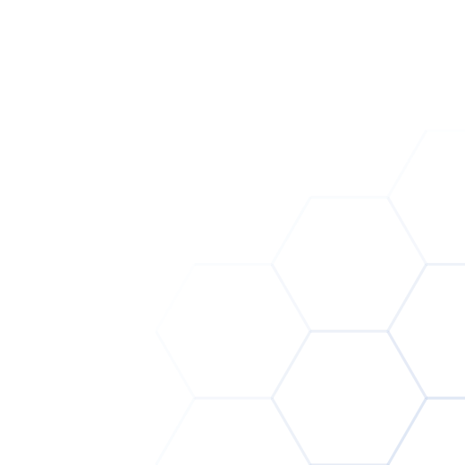

Soluciones para automoción
Control de calidad automatizado en líneas de producción mediante visión artificial.
01
Quiénes somos
AIS Vision Systems forma parte de AIS Group, originado en Dublín (Irlanda) en 1998
Fundada en 2013 en Sabadell, AIS Vision Systems ofrece soluciones automatizadas de control de calidad en líneas de producción mediante visión artificial.

3
AIS Group
Irlanda
Automatic Identification Systems
Impresión y aplicación de etiquetas
Lectura de códigos
Visión artificial
Países Bajos
AIS Scanology
Lectura de códigos
Verificación de códigos
Visión artificial
Irlanda
AIS Vision Automation
Automatización en línea
Robótica
Transporte
España
Rosepetal
Plataforma de software para el entrenamiento de modelos de IA de control de calidad industrial
4
Equipo propio
24
empleados en AIS Vision Systems
Oficinas en Can Camps, 10, Sabadell
12
empleados en Rosepetal
Can Camps, 10: taller y desarrollo de proyectos
8
Alianzas estratégicas y reconocimiento
AIS Vision Systems mantiene alianzas estratégicas con fabricantes de componentes para automatización industrial.
Fabricantes
Datalogic, OMRON y GlobalVision
Reconocimiento
PYME Innovadora
Por parte del Ministerio de Economía y Competitividad
Proyecto del CDTI
AIS REV 360
Concedido por el Ministerio de Ciencia e Innovación
Un producto revolucionario para inspeccionar envases a 360 grados
11
Líneas de producto

Impresión y aplicación de etiquetas

Visión artificial

Impresión y marcaje

Impresión de etiquetas

Verificación de códigos

Trazabilidad y captura de datos
12
02
Referencias
03
Soluciones para automoción
Operación e integración del sistema
Soportes mecánicos: esenciales para integrar el sistema en la línea del cliente.
Cuadro eléctrico: elementos de potencia, protección y comunicación
Pantalla: resultados y ajustes en línea

18
Soluciones y productos de AIS Vision Systems
AIS Vision Systems ofrece una gama completa de soluciones de visión artificial personalizadas para una variedad de aplicaciones.


Gracias
Web
www.aisvision.com
Teléfono
+34 931 003 035
LinkedIn
AIS Vision Systems
YouTube
AIS Vision Systems